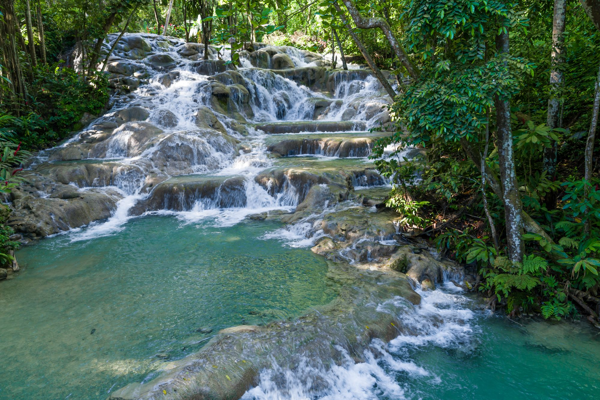

About Jamaica
Jamaica, located in the heart of the Caribbean, is a breathtaking island famous for its tropical beauty, vibrant culture, and rich history. Whether you're looking to relax on golden beaches, hike through lush rainforests, or experience reggae music and local delicacies, Jamaica has something for every traveler.

Top Attractions

Dunn's River FallsA stunning waterfall in Ocho Rios, where visitors can climb the cascading water or relax on the beach at the base. |
Seven Mile BeachThis iconic beach in Negril is famous for its soft, white sand and crystal-clear turquoise water, perfect for sunbathing, swimming, and water sports. |
Blue HoleA hidden gem surrounded by lush forest, Blue Hole offers crystal-clear freshwater pools perfect for swimming and cliff diving. |
Bob Marley MuseumLocated in Kingston, the museum is dedicated to the life and legacy of the legendary reggae musician Bob Marley, offering a glimpse into his life and music. |
Culture
Jamaican culture is a beautiful blend of African, European, and Indigenous influences, with a strong emphasis on music, dance, and cuisine. The island is the birthplace of reggae music and is home to some of the most vibrant festivals in the world, such as Reggae Sumfest and the Jamaica Carnival.
Popular Jamaican Dishes
- Jerk Chicken: A spicy grilled chicken, marinated in a blend of hot peppers, allspice, and other spices.
- Ackee and Saltfish: Jamaica's national dish, a flavorful combination of salted codfish and ackee, a tropical fruit.
- Patty: A flaky pastry filled with a variety of savory fillings, often spiced beef or chicken.
Travel Tips
- Best Time to Visit: December to April is ideal for pleasant weather, while the summer months are hotter and can be more humid.
- Currency: The Jamaican Dollar (JMD) is the official currency, but US Dollars are widely accepted.
- Local Greetings: "Wah Gwaan" (What's going on/hello) is a common greeting, reflecting the island's friendly and welcoming spirit.
- Safety: While Jamaica is a beautiful destination, it's important to stay aware of your surroundings, particularly in urban areas, and avoid remote locations after dark.